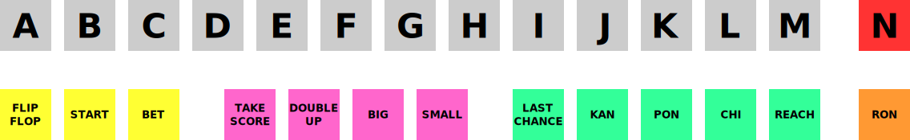

Default Keyboard Controls¶
Controls Foreword¶
MAME supports a vast array of different types of machines, with a significantly different array of inputs across them. This means that some keyboard keys, mouse buttons, and joystick buttons will be used for multiple functions. As a result, the control charts below are separated by machine-types to make it easier to find what you’re looking for.
All of the controls below are fully configurable in the user interface. These charts show the default configuration.
Note that the defaults shown here are arranged by US ANSI key positioning. If you are using a different layout, the keys will vary.
MAME User Interface Controls¶
The controls here cover MAME functions such as MAME’s menus, machine pause, and saving/loading save states.
- Tab
Toggles the configuration menu.
- `/~ (backtick/tilde key)
Toggles the On-Screen Display.
If you are running with -debug, this key sends a ‘break’ in emulation.
When a slider control is visible, the keyboard controls are the same as in the Slider Controls menu:
Up - select previous parameter to modify.
Down - select next parameter to modify.
Left - decrease the value of the selected parameter.
Right - increase the value of the selected parameter.
Delete - reset parameter value to its default.
Alt+Left - decrease the value by the largest amount.
Control+Left - decrease the value by 10x.
Shift+Left - decrease the value by 0.1x.
Shift+Alt+Left - decrease the value by the smallest amount.
Alt+Right - increase the value by the largest amount.
Control+Right - increase the value by 10x.
Shift+Right - increase the value by 0.1x.
Shift+Alt+Right - increase the value by the smallest amount.
- Up Arrow
Highlight previous UI menu option.
- Down Arrow
Highlight next UI menu option.
- Left Arrow
Change current UI option setting when an arrow is present on it.
- Right Arrow
Change current UI option setting when an arrow is present on it.
- Home/End
Highlight first or last UI menu option.
- [ ]
Move to previous or next group in UI menus that support it (e.g. move to the inputs for the previous or next device in the Input Assignments (this System) menu).
- Enter/Joystick 1 Button 1
Select currently highlighted UI menu option.
- Space
Show comment on currently highlighted UI menu option.
- Delete
Clear/reset to default when highlighting an entry on the input configuration, cheat options, and plugin options pages.
- F1
Power the machine on for machines that have specific power button behavior.
- F2
Power the machine off for machines that have specific power button behavior.
- F3
Soft resets the machine.
- Left Shift+F3
Performs a “hard reset”, which tears everything down and re-creates it from scratch. This is a more thorough and complete reset than the reset you get from hitting F3.
- F4
Shows the game palette, decoded graphics tiles/characters and any tilemaps.
Use the Enter key to switch between the three modes (palette, graphics, and tilemaps).
Press F4 again to turn off the viewer. The key controls in each mode vary slightly:
Palette/colortable mode:
[ ] - switch between palette devices.
Up/Down - scroll up/down one line at a time.
Shift+Up/Down - scroll right/left one cell at a time.
Page Up/Page Down - scroll up/down one page at a time (hold Control or Alt to scroll 10 or 100 pages).
Home/End - move to top/bottom of list.
-/+ - increase/decrease the number of colors per row.
0 - restore the default number of colors per row.
Enter - switch to graphics viewer.
Graphics mode:
[ ] - switch between different graphics sets.
Up/Down - scroll up/down one line at a time.
Shift+Up/Down - scroll right/left one cell at a time.
Page Up/Page Down - scroll up/down one page at a time (hold Control or Alt to scroll 10 or 100 pages).
Home/End - move to top/bottom of list.
Left/Right - change color displayed (hold Control or Alt for wider control).
R - rotate tiles 90 degrees clockwise.
-/+ - increase/decrease the number of tiles per row (hold Shift to restrict to integer scale factors).
0 - restore the default number of tiles per row (hold Shift to restrict to integer scale factors).
Enter - switch to tilemap viewer.
Tilemap mode:
[ ] - switch between different tilemaps.
Up/Down/Left/Right - scroll 8 pixels at a time.
Shift+Up/Down/Left/Right - scroll 1 pixel at a time.
Control+Up/Down/Left/Right - scroll 64 pixels at a time.
R - rotate tilemap view 90 degrees clockwise.
-/+ - decrease/increase the zoom factor.
0 - expand small tilemaps to fill the display.
Enter - switch to palette/colortable mode.
Note: Not all systems have decoded graphics and/or tilemaps.
- Left Shift+F4
While paused, loads the most recent rewind save state.
- F5
Pauses the emulated machine.
- Left Shift+F5
While paused, advances to next frame. If rewind is enabled, a new rewind save state is also captured.
- F6
Create a save state. Requires an additional keypress to identify the state, similar to the load option above. If an existing save state is present, it will also appear in the selection menu to allow overwriting of that save state.
- Left Shift+F6
Create a quick save state.
- F7
Load a save state. You will be prompted to press a key or select from the menu to determine which save state you wish to load.
Note that the save state feature is not supported for a large number of drivers. If a given driver is not known to work perfectly, you will receive a warning that the save state may not be valid when attempting to save or load.
- Left Shift+F7
Load a quick save state.
- F8
Decrease frame skipping on the fly.
- Left Shift+F8
Toggle cheat mode. (if started with “-cheat”)
- Left Alt+F8
Decrease Prescaling. (SDL MAME only)
- F9
Increase frame skipping on the fly.
- Left Alt+F9
Increase Prescaling. (SDL MAME only)
- F10
Toggle speed throttling.
- Left Alt+F10
Toggle HLSL Post-Processing. (Windows non-SDL MAME only)
- Left Alt+F10
Toggle Filter. (SDL MAME only)
- F11
Toggles speed display.
- Left Shift+F11
Toggles internal profiler display (if compiled in).
- Left Alt+F11
Record HLSL Rendered Video.
- F12
Saves a screen snapshot.
- Left Shift+F12
Begin recording MNG video.
- Left Control+Left Shift+F12
Begin recording AVI video.
- Left Alt+F12
Take HLSL Rendered Snapshot.
- Insert (Windows non-SDL MAME)/Page Down (SDL MAME)
Fast forward. While held, runs game with throttling disabled and with the maximum frameskip.
- Left Alt+Enter
Toggles between full-screen and windowed mode.
- Scroll Lock/Forward Delete (Mac Desktop)/fn-Delete (Mac Laptop)
Default mapping for the uimodekey.
This key toggles MAME’s response to user interface keys such as the (by default) Tab key being used for menus. All emulated machines which require emulated keyboards will start with UI controls disabled by default and you can only access the internal UI by first hitting this uimodekey key. You can change the initial status of the emulated keyboard as presented upon start by using -uimodekey
- Escape
Exit emulator, return to the previous menu, or cancel the current UI option.
Default Arcade Machine Controls¶
This section covers controls that are applicable to most kinds of arcade machines. Note that not all machines will have all of these controls. All the controls below are fully configurable in the user interface. This list shows the standard keyboard configuration.
- 5 (not numeric keypad)
Coin slot 1
- 6 (not numeric keypad)
Coin slot 2
- 7 (not numeric keypad)
Coin slot 3
- 8 (not numeric keypad)
Coin slot 4
- Backspace
Bill 1 (For machines that have a bill receptor/note reader)
- T
Tilt
Usually a tilt switch or shock sensor that will end the current game, reset credits and/or reset the machine if the machine is knocked excessively hard or moved. Most commonly found on pinball machines.
- - (not numeric keypad)
Volume Down
For machines that have an electronic volume control.
- = (not numeric keypad)
Volume Up
For machines that have an electronic volume control.
- F1
Memory Reset
This resets high scores, credits/winnings, statistics, and/or operator settings on machines that support it.
- F2
Service Mode
This is a momentary push-button on some machines, while it is a toggle switch or DIP switch on others.
- 9 (not numeric keypad)
Service 1
Service buttons are typically used to give free credits or to navigate the operator service menus.
- 0 (not numeric keypad)
Service 2
- - (not numeric keypad)
Service 3
- = (not numeric keypad)
Service 4
Default Arcade Game Controls¶
This section covers controls for arcade games using common joystick/button control schemes. All the controls below are fully configurable in the user interface. This list shows the standard keyboard configuration.
- 5 (not numeric keypad)
Coin slot 1
- 6 (not numeric keypad)
Coin slot 2
- 7 (not numeric keypad)
Coin slot 3
- 8 (not numeric keypad)
Coin slot 4
- 1 (not numeric keypad)
Player 1 start or 1 player mode
- 2 (not numeric keypad)
Player 2 start or 2 players mode
- 3 (not numeric keypad)
Player 3 start or 3 players mode
- 4 (not numeric keypad)
Player 4 start or 4 players mode
Player 1 Controls¶
- Up Arrow
Player 1 Up
- Down Arrow
Player 1 Down
- Left Arrow
Player 1 Left
- Right Arrow
Player 1 Right
- E
Player 1 Up on Left Stick for dual-stick machines (e.g. Robotron)
- D
Player 1 Down on Left Stick for dual-stick machines (e.g. Robotron)
- S
Player 1 Left on Left Stick for dual-stick machines (e.g. Robotron)
- F
Player 1 Right on Left Stick for dual-stick machines (e.g. Robotron)
- I
Player 1 Up on Right Stick for dual-stick machines (e.g. Robotron)
- K
Player 1 Down on Right Stick for dual-stick machines (e.g. Robotron)
- J
Player 1 Left on Right Stick for dual-stick machines (e.g. Robotron)
- L
Player 1 Right on Right Stick for dual-stick machines (e.g. Robotron)
- Left Ctrl/Mouse B0/Gun 1 Button 0
Player 1 Button 1
- Left Alt/Mouse B2/Gun 1 Button 1
Player 1 Button 2
- Spacebar/Mouse B1/Joystick 1 Button 1 or B
Player 1 Button 3
- Left Shift
Player 1 Button 4
- Z
Player 1 Button 5
- X
Player 1 Button 6
- C
Player 1 Button 7
- V
Player 1 Button 8
- B
Player 1 Button 9
- N
Player 1 Button 10
- M
Player 1 Button 11
- ,
Player 1 Button 12
- .
Player 1 Button 13
- /
Player 1 Button 14
- Right Shift
Player 1 Button 15
Player 2 Controls¶
- R
Player 2 Up
- F
Player 2 Down
- D
Player 2 Left
- G
Player 2 Right
- A
Player 2 Button 1
- S
Player 2 Button 2
- Q
Player 2 Button 3
- W
Player 2 Button 4
- E
Player 2 Button 5
Player 3 Controls¶
- I
Player 3 Up
- K
Player 3 Down
- J
Player 3 Left
- L
Player 3 Right
- Right Control
Player 3 Button 1
- Right Shift
Player 3 Button 2
- Enter (not numeric keypad)
Player 3 Button 3
Player 4 Controls¶
- 8 (on numeric keypad)
Player 4 Up
- 2 (on numeric keypad)
Player 4 Down
- 4 (on numeric keypad)
Player 4 Left
- 6 (on numeric keypad)
Player 4 Right
- 0 (on numeric keypad)
Player 4 Button 1
- . (on numeric keypad)
Player 4 Button 2
- Enter (on numeric keypad)
Player 4 Button 3
Default Mahjong and Hanafuda Keys¶
Most mahjong and hanafuda games use a standard control panel layout. Some keys may not be present, depending on the kind of game. For example games without a bonus game feature may lack the Take Score, Double Up, Big and Small keys, and games without gambling features may also lack the Bet key. Some games may not use all keys that are present. For example many games do not use the Flip Flop and Last Chance keys.
{kind=link}
Due to the large number of keys, MAME only provides default input configuration for a single set of player controls. For multi-player mahjong/hanafuda games, or mahjong/hanafuda games with multiple player positions, manual configuration is required. All the keys below are fully configurable in the user interface. This list shows the standard keyboard configuration.
- 5 (not numeric keypad)
Coin slot 1
- 6 (not numeric keypad)
Coin slot 2
- 7 (not numeric keypad)
Coin slot 3
- 8 (not numeric keypad)
Coin slot 4
- Y
Player 1 Mahjong/Hanafuda Flip Flop
- 1 (not numeric keypad)
Player 1 start or 1 player mode
- 2 (not numeric keypad)
Player 2 start or 2 players mode
- 3 (not numeric keypad)
Player 3 start or 3 players mode
Mahjong Bet
- 4 (not numeric keypad)
Player 4 start or 4 players mode
- Right Ctrl
Player 1 Mahjong/Hanafuda Take Score
- Right Shift
Player 1 Mahjong/Hanafuda Double Up
- Enter
Player 1 Mahjong/Hanafuda Big
- Backspace
Player 1 Mahjong/Hanafuda Small
- Right Alt
Player 1 Mahjong/Hanafuda Last Chance
- Ctrl
Mahjong Kan
- Alt
Mahjong Pon
- Spacebar
Mahjong Chi
- Shift
Mahjong Reach
- Z
Mahjong Ron
- A
Player 1 Mahjong/Hanafuda A
- B
Player 1 Mahjong/Hanafuda B
- C
Player 1 Mahjong/Hanafuda C
- D
Player 1 Mahjong/Hanafuda D
- E
Player 1 Mahjong/Hanafuda E
- F
Player 1 Mahjong/Hanafuda F
- G
Player 1 Mahjong/Hanafuda G
- H
Player 1 Mahjong/Hanafuda H
- I
Player 1 Mahjong I
- J
Player 1 Mahjong J
- K
Player 1 Mahjong K
- L
Player 1 Mahjong L
- M
Player 1 Mahjong M
Player 1 Hanafuda Yes
- N
Player 1 Mahjong N
Player 1 Hanafuda No
- O
Player 1 Taiwanese Mahjong O
- P
Player 1 Taiwanese Mahjong P
- Q
Player 1 Taiwanese Mahjong Q
Default Gambling Keys¶
All the keys below are fully configurable in the user interface. This list shows the standard keyboard configuration.
Note that many gambling games use buttons for multiple functions. For example a slots game may use the Start button to stop all reels, lacking a dedicated Stop All Reels button, or a poker game may use the hold buttons to control the double-up bonus game, lacking dedicated Take Score, Double Up, High and Low buttons.
- 5
Coin slot 1
- 6
Coin slot 2
- 7
Coin slot 3
- 8
Coin slot 4
- Backspace
Bill 1 (For machines that have a bill receptor/note reader)
- I
Payout
- Q
Key In
- W
Key Out
- F1
Memory Reset
- 9 (not numeric keypad)
Service 1 (Service buttons are typically used to give free credits or to navigate the internal operator service menus)
- 0 (not numeric keypad)
Service 2
Book-Keeping (for machines that have this functionality)
- - (not numeric keypad)
Service 3
- = (not numeric keypad)
Service 4
- M
Bet
- 1 (not numeric keypad)
Player 1 start or 1 player mode
- 2 (not numeric keypad)
Deal
- L
Stand
- D
Double Up
For games that allow gambling winnings in a double-or-nothing bonus game, this gambles the winnings from the main game in the bonus game.
- F
Half Gamble
Used by games that allow gambling half or all of the winnings from the main game in the bonus game, this stakes half the winnings from the main game.
- G
Take Score
For games that allow gambling winnings in a double-or-nothing bonus game, this stakes the winnings from the main game.
- A
High/big
- S
Low/small
- O
Door
Default Blackjack Keys¶
All the keys below are fully configurable in the user interface. This list shows the standard keyboard configuration.
- 1
Player 1 start or 1 player mode
Used to deal a new hand for games that have separate buttons to deal a new hand and draw an additional card.
- 2
Deal (hit)
Used to draw an additional card, and to deal a new hand in games that don’t use separate buttons to deal a new hand and draw an additional card.
- L
Stand
Default Poker Keys¶
All the keys below are fully configurable in the user interface. This list shows the standard keyboard configuration.
- 1
Player 1 start or 1 player mode
Used to deal a new hand for games that have separate buttons to deal a new hand and draw replacement cards.
- 2
Deal
Used to draw replacement cards, and to deal a new hand in games that don’t use separate buttons to deal a new hand and draw replacement cards.
- Z
Hold 1/discard 1
- X
Hold 2/discard 2
- C
Hold 3/discard 3
- V
Hold 4/discard 4
- B
Hold 5/discard 5
- N
Cancel
Used by some games to cancel current selection for cards to hold/discard.
Default Slots Keys¶
All the keys below are fully configurable in the user interface. This list shows the standard keyboard configuration.
- 1
Player 1 start or 1 player mode
- X
Stop Reel 1
- C
Stop Reel 2
- V
Stop Reel 3
- B
Stop Reel 4
- Z
Stop All Reels
Default Computer Keys¶
All the keys below are fully configurable in the user interface. This list shows the standard keyboard configuration.
Note that controls can vary widely by computer type, so not all keys are shown here. See the Input Assignments (this system) section of MAME’s Input Settings menu for details for the machine you are currently using.
- Tab
Toggles the configuration menu.
- Scroll Lock/Forward Delete (Mac Desktop)/fn-Delete (Mac Laptop)
Default mapping for the uimodekey.
This key toggles MAME’s response to user interface keys such as the (by default) Tab key being used for menus. All emulated machines which require emulated keyboards will start with UI controls disabled by default and you can only access the internal UI by first hitting this uimodekey key. You can change the initial status of the emulated keyboard as presented upon start by using -uimodekey
- F2
Start tape for machines that have cassette tape drives.
- Shift+F2
Stop tape for machines that have cassette tape drives.
- Left Shift+Scroll Lock
Pastes from system clipboard into the emulated machine.
- Alphanumeric Keys
These keys are mapped to their equivalents in the emulated machine by default.
Other Machines¶
All the keys are fully configurable in the user interface.
Note that controls can vary widely by machine type, so default keys are not shown here and defaults will vary considerably based on the manufacturer and style. See the Input Assignments (this system) section of MAME’s Input Settings menu for details for the machine you are currently using.